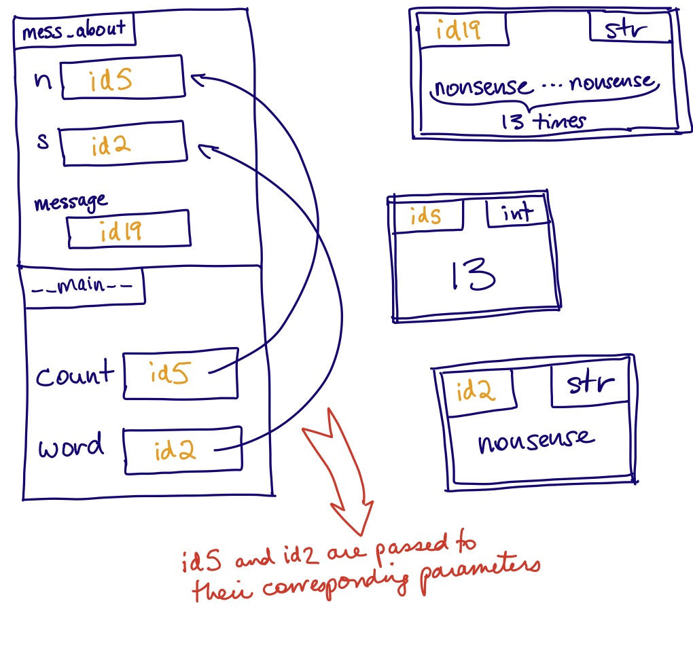
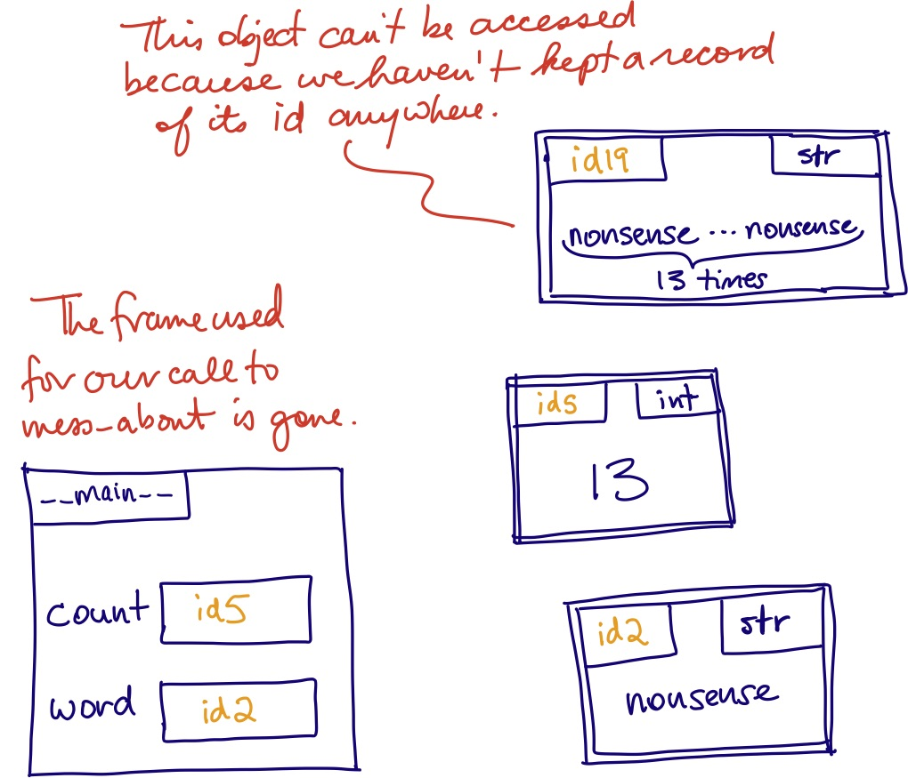
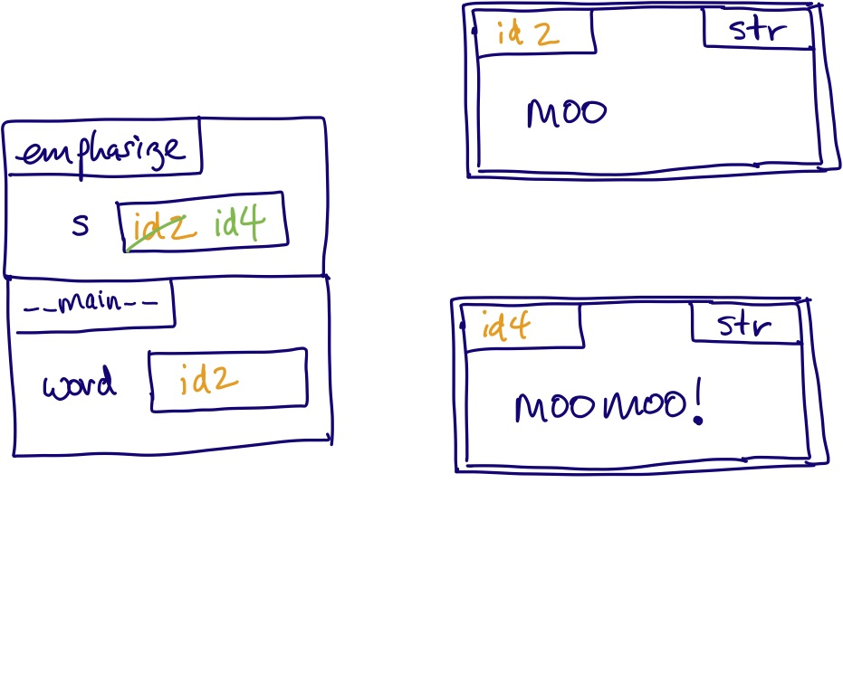
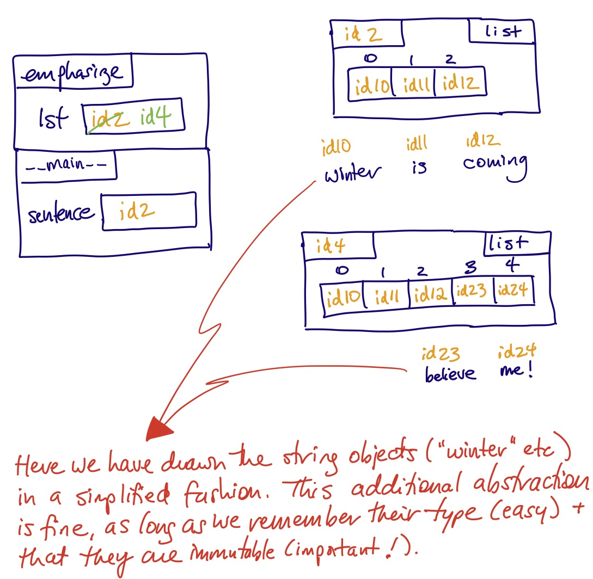
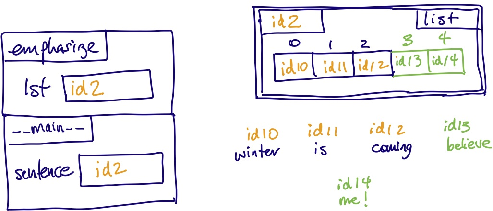

Let’s use this simple example to review some terminology that should be familiar to you:
In the function declaration, each variable in the parentheses is called a parameter. Here, n and s are parameters of function mess_about. When we call a function, each expression in the parentheses is called an argument. The arguments in our one call to mess_about are count and word.
Python must keep track of the function that is currently running, and any variables defined inside of it. It stores this information in something called a stack frame, or just “frame” for short.
Every time we call a function, the following happens:
Then the body of the function is executed.
In the body of the function there may be assignment statements. We know that if the variable on the left-hand-side of the assignment doesn’t already exist, Python will create it. But with the awareness that there may be a stack of frames, we need a slightly more detailed rule:
If the variable on the left-hand-side of the assignment doesn’t already exist in the top stack frame, Python will create it in that top stack frame.
For example, if we stop our above sample code right before printing message, this is the state of memory:
Notice that the top stack frame, for our call to mess_about, includes the new variable message. We say that any new variables defined inside a function are local variables; they are local to a call to that function.
When a function returns, either due to executing a return statement or getting to the end of the function, the frame for that function call is deleted. All the variables defined in it—both parameters and local variables—disappear. If we try to refer to them after the function has returned, we get an error. For example, when we are about to execute the final line in this program,
this is the state of memory,
which explains why the final line produces the error NameError: name 'n' is not defined.
What we often call “parameter passing” can be thought of as essentially variable assignment. In the example above, it is as if we wrote
before the body of the function.
If an argument to a function is a variable, what we assign to the function’s parameter is the id of the object that the variable references. This creates an alias. As you should expect, what the function can do with these aliases depends on whether or not the object is mutable.
If we pass a reference to an immutable object, we can do whatever we want with the parameter and there will be no effect outside the function.
Here’s an example:
This code prints plain old moo. The reason is that, although we set up an alias, we don’t (and can’t) change the object that both word and s reference; we make a new object. Here’s the state of memory right before the function returns:
Once the function is over and the stack frame is gone, the string object we want (with moomoo!) will be inaccessible. The net effect of this function is nothing at all. It doesn’t change the object that s refers to, it doesn’t return anything, and it has no other effect such as taking user rinput or printing to the screen. The one thing it does do, making s refer to something new, doesn’t last beyond the function call.
If we want to use this function to change word, the solution is to return the new value and then, in the calling code, assign that value to word:
This code prints out moomoo!. Notice that we changed the function name from emphasize to emphasized. This makes sense when we consider the context of the function call:
Our function call is not merely performing some action, it is returning a value. So the expression on the right-hand side has a value: it is the emphasized word.
If we wrote code analogous to the broken code in Example 3, but with a mutable type, it wouldn’t work either. For example:
This code prints ['winter', 'is', 'coming'] for the same reason we saw in Example 3. Changing a reference (in this case, making lst refer to something new) is not the same as mutating a value (in this case, mutating the list object whose id was passed to the function). This model of memory illustrates:
The code below, however, correctly mutates the object:
This is the state of memory immediately before function emphasize returns:
Here are some things to notice:
emphasize, a new frame is added to the call stack. In the upper-left corner of the frame, we write the function name.lst exists in the stack frame. It comes into being when the function is called. And when the function returns, this frame will be discarded, along with everything in it. At that point, lst no longer exists.sentence to emphasize, we assign it to lst. In other words, we set lst to id29, which creates an alias.id29 is a reference to a list object, which is mutable. When we use lst to access and change that object, the object that sentence references also changed. Of course it does: they are the same object!The situation gets trickier when we have objects that contain references to other objects, and you’ll see examples of this in the work you do this term. The bottom line is this: know whether your objects are mutable—at each level of their structure. Memory model diagrams offer a concise visual way to represent that.